5. Labour Supply Model
💡 The Foundations: Understanding the Demand for Leisure
In the Neoclassical model, we don't just "decide to work." Instead, we decide how much leisure we want to consume. Time is a finite resource (limited to 24 hours a day or $T$ hours), and every hour not spent working is considered leisure. Understanding what drives this demand is the key to predicting how much labor someone will eventually supply.
What drives our demand for free time?
The decision to consume leisure depends on three fundamental pillars that interact with each other in every individual's mind:
Preferences
Every person is unique. Some individuals derive immense satisfaction from work, while others place a very high value on family time or rest. In economics, we translate these internal desires into Utility Functions and Indifference Curves. Your personal "taste" for leisure determines how much income you are willing to give up for one more hour of rest.
Wealth and Non-Labour Income
This follows the logic of Normal Goods. If you win the lottery (increasing your wealth), you are likely to "buy" more of everything you like—including leisure.
The intuition: As your wealth rises, you feel less pressurized to earn, and thus your demand for leisure hours increases ($\uparrow \text{Wealth} \rightarrow \uparrow \text{Leisure}$).
Opportunity Cost
Leisure has a price: the market wage ($W$). Every hour you spend resting is an hour where you chose not to earn that wage.
The Decision: If the personal value you place on that hour is lower than the wage, you work. If it's higher, you stay home.
🔬 The Two Faces of a Wage Change
When the wage rate increases, it does two things: it makes you richer, but it also makes leisure more expensive. These two forces are the Income Effect and the Substitution Effect. They fight each other, and the "winner" determines if you'll work more or less.
Substitution Effect (SE)
This is the "Relative Price" effect. When your wage goes up, every hour of leisure becomes more expensive in terms of lost earnings.
Logic: Since leisure is now costlier, you naturally want to consume less of it. You "substitute" your leisure time with more work hours to take advantage of the better pay.
Wage $\uparrow \rightarrow$ Leisure $\downarrow \rightarrow$ Working Hours $\uparrow$.
Income Effect (IE)
As the wage rises, your real income increases. You are effectively "richer" for every hour you work.
Logic: If leisure is a normal good, being richer makes you want to "buy" more free time. You don't need to work as many hours to maintain your standard of living.
Wage $\uparrow \rightarrow$ Real Income $\uparrow \rightarrow$ Leisure $\uparrow \rightarrow$ Working Hours $\downarrow$.
📉 The Backward-Bending Labour Supply Curve

This iconic curve shows that individuals don't always work more when paid more. The shape is divided into two phases:
- Phase 1 (Low Wages): The curve slopes upward. Here, the Substitution Effect dominates. People are motivated to work more as the wage rises.
- The Turning Point ($w_0$): This is the tipping point where the two effects exactly cancel each other out ($SE = IE$).
- Phase 2 (High Wages): The curve bends backward. Here, the Income Effect dominates. People feel wealthy enough to prioritize leisure over the extra marginal dollar.
🎯 Individual Preferences & Utility
To model this mathematically, we assume individuals maximize their Utility ($U$), which depends on Real Income ($Y$) and Leisure ($L$).
$U = U(Y, L)$
The Indifference Curve (IC)
An Indifference Curve represents all the combinations of Income ($Y$) and Leisure ($L$) that give the individual the exact same level of satisfaction. Whether you have lots of money and little time, or lots of time and little money, as long as you are on the same curve, you are equally happy.
Why is the curve downward sloping?
The "Law of Compensation" applies here. Because both income and leisure provide utility, if you want more of one, you must give up some of the other to remain at the same level of happiness. This creates a negative relationship, hence the downward slope.
The Income-Leisure Trade-off
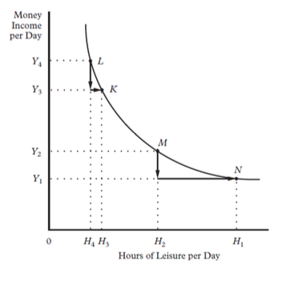
As we move along the curve from left to right, we are observing a trade-off in action:
- Point L to K: The individual chooses slightly more leisure. To keep their utility constant, they sacrifice a small amount of income ($Y_4 \to Y_3$).
- Point M to N: The individual wants much more leisure. Notice how they are willing to accept a much larger drop in income ($Y_2 \to Y_1$) to get those extra hours of rest.
- Key Takeaway: Leisure is not free; its "price" is the income you could have earned during those hours.
🎭 Different Strokes for Different Folks: Comparing Preferences
Not everyone values an hour of sleep or an hour of Netflix equally. The slope of your indifference curve reveals your personal priorities. We can categorize people by how "steep" or "flat" their curves are.
High Value on Leisure ("The Steep Curve")
For this individual, the curve is very steep. They are "addicted" to their free time.
- Behavior: They value leisure so much that even for a small increase in leisure, they would be willing to give up a massive amount of income.
- Labor Supply: To convince them to work just one more hour, you would need to offer them an extremely high wage. They naturally tend to work fewer hours.
Low Value on Leisure ("The Flat Curve")
For this individual, the curve is flatter. They value money (and the goods it buys) more than their rest.
- Behavior: They are willing to sacrifice a lot of leisure for even a small gain in income. They "move" easily between time and money.
- Labor Supply: They are hard workers. They will readily take on overtime or extra shifts even for modest pay increases.

Visualizing the difference: Steep curves (a) vs. Flat curves (b).
🚧 The Constraints: Living in a Limited World
In a perfect world, we would have infinite money and infinite free time. However, our choices are restricted by two unavoidable realities: we only have 24 hours in a day, and we can only buy goods if we have earned the money to pay for them. In economics, we call these the Time Constraint and the Goods Constraint.
1. The Time Constraint
Time is the ultimate scarce resource. Life is a collection of hours that must be divided between working ($H$) and enjoying leisure ($L$).
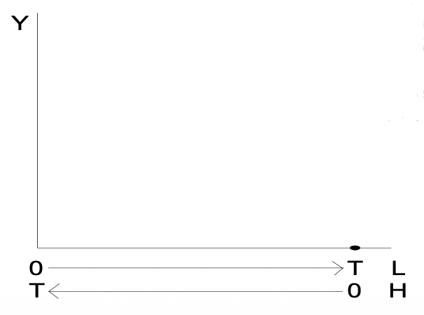
$H + L = T$
- $T$ (Total Time): Usually set to 16 hours (24h minus 8h for maintenance like sleep and eating).
- Arbitrage: If you want more leisure, you must work less. There is no middle ground.
2. The Goods Constraint
To consume goods and services ($Y$), you need income. Unless you have non-labour income, your only source of funds is your labor.
$wH = pY$
- $w$: The nominal wage (dollars per hour).
- $p$: The price index of goods.
- $Y$: Your real income (what you can actually buy).
📉 Deriving the Budget Constraint
By merging these two constraints, we can see the direct link between our time and our consumption. If we replace $H$ (work) by $(T - L)$ in the goods constraint, we get the master equation of the labour supply model.
Starting from: $pY = w(T - L)$
Distribute the wage: $pY = wT - wL$
Final Budget Equation: $Y = -\left(\frac{w}{p}\right)L + \left(\frac{wT}{p}\right)$
The Concept of Full Income ($wT$)
The term $wT$ represents your Full Income. This is your maximum earnings potential—the amount of money you would have if you spent 100% of your time working and 0% resting.
The Insight: Your full income is spent on two things: explicit costs (buying goods, $pY$) and implicit costs (the "price" of the leisure you chose to take, $wL$).
📊 Analyzing the Budget Line

The budget line tells the story of your possibilities:
- Vertical Intercept ($wT/p$): The "all work, no play" point. Your highest possible real income.
- Horizontal Intercept ($T$): The "all play, no work" point. You have all the time in the world but zero income ($Y=0$).
- The Slope ($-\frac{w}{p}$): This is the Real Wage. It represents the cost of an extra hour of leisure. Every time you move 1 step to the right (more leisure), you drop down by $w/p$ steps in income.
⚖️ Finding the Balance: The Optimal Work/Leisure Mix
Now that we have the Indifference Curves (what we want) and the Budget Constraint (what we can afford), we can find the individual's optimal choice. A rational person will always try to reach the highest possible utility level allowed by their budget.

The Interior Solution (Point of Tangency)
Optimization happens exactly at the point where the Budget Line is tangent to the highest possible Indifference Curve ($U_2$ in the graph).
- $L^*$: Optimal hours of leisure.
- $H^*$: Optimal hours of work ($T - L^*$).
- $Y^*$: Optimal real income.
The Optimality Condition: $MRS_{L,Y} = \frac{w}{p}$
At the optimal point, the slope of the indifference curve matches the slope of the budget line. This has a profound economic meaning:
Your Personal Value of Leisure (MRS) = Market Price of Leisure (Real Wage)
Intuition: If your MRS was higher than the wage, you'd value your hour of rest more than the money you could earn, so you'd take more leisure. You only stop adjusting when your internal "valuation" perfectly matches what the market pays.
🛑 Corner Solutions: Choosing Not to Work
Sometimes, the "math" doesn't lead to a balance. For some people, even at the highest possible market wage, the value they place on their time is so high that they choose to remain out of the labour force entirely. This is what we call a Corner Solution.

The "All Leisure" Choice
In this case, the highest utility occurs at the far right of the graph ($L = T$). These individuals are at the "corner" of their possibilities.
- Result: $H = 0$ (Zero hours worked).
- Condition: $MRS_{L,Y} > \frac{w}{p}$ for every possible point.
Why does this happen?
- The individual has extremely strong preferences for leisure (very steep curves).
- The market wage is too low to motivate them to sacrifice their time.
🎟️ The Entry Ticket: The Reservation Wage ($w^r$)
The **Reservation Wage** is the absolute minimum wage that would convince an individual to work their first hour. It represents the value you place on your time when you are currently doing zero work. If the market offers you even a cent less than this amount, you stay home.

Visualizing $w^r$
Mathematically, the reservation wage is the absolute value of the slope of the indifference curve at the point of zero work ($L = T$).
$w^r = MRS_{L,Y} \Big|_{L=T}$
Intuition: It is the rate at which you are willing to swap your very last hour of leisure for income. The steeper your indifference curve at that point, the higher your reservation wage.
📈 To Work or Not to Work? (Market Entry)
The decision to join the labour force is a simple comparison between what the market offers (the **Real Wage**) and what you think your time is worth (**Reservation Wage**).
Case 1: Market Entry ($w/p > w^r$)
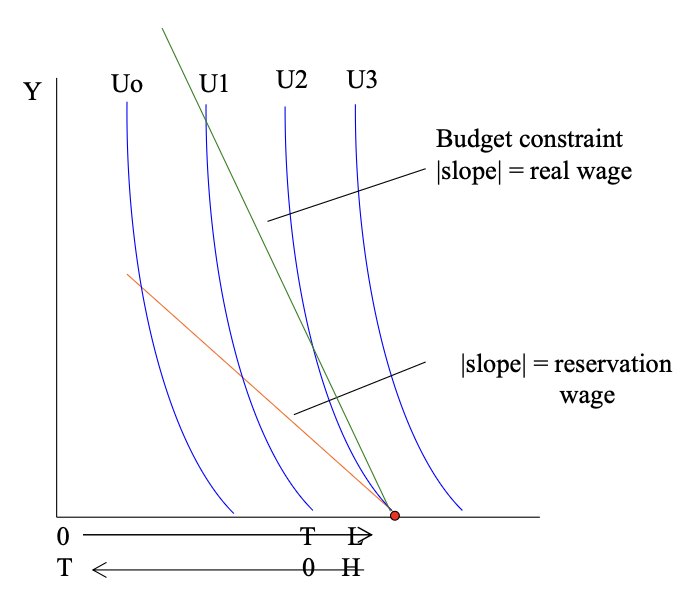
Scenario: The budget line (green) is steeper than the reservation wage tangent (orange).
Result: Individual works ($H > 0$). The market pay is high enough to compensate for the lost leisure. They move to an interior solution.
Case 2: Non-Participation ($w/p < w^r$)
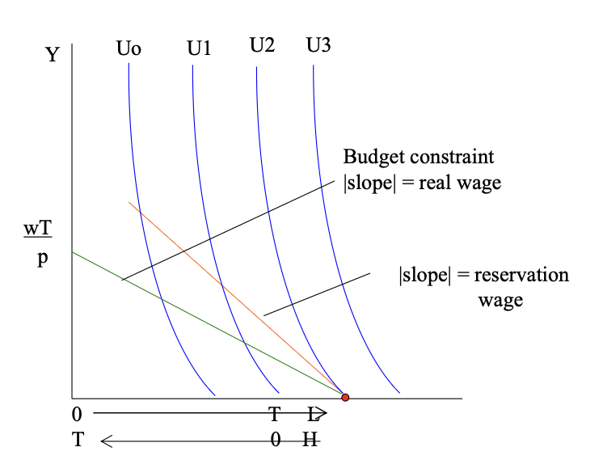
Scenario: The market wage is flatter than the reservation wage tangent.
Result: Individual stays out of the labour force ($H = 0$). Leisure is more valuable to the person than the money they could earn.
💰 Beyond the Paycheck: Nonlabour Income ($A$)
Up until now, we assumed that all your money came from working. In reality, individuals often have other sources of "unearned" income that don't depend on how many hours they spend at the office. We call this Nonlabour Income (notated as $A$ or $V$).
What counts as Nonlabour Income?
Think of any money that flows into your pocket regardless of your job status:
📈 Financial: Interest, Dividends, Profits.
🏠 Property: Rent from real estate.
🎁 Windfalls: Lottery, Inheritance, Alimony.
How does $A$ change the Budget Constraint?
The goods constraint is now "boosted." Your total spending power is your labor earnings plus your nonlabour income. Let's see how the math evolves:
New Goods Constraint: $pY = wH + A$
Substitute $H = (T - L)$: $pY = w(T - L) + A$
Distribute and rearrange: $pY = wT - wL + A$
Shifted Budget Equation: $Y = -\left(\frac{w}{p}\right)L + \frac{wT + A}{p}$
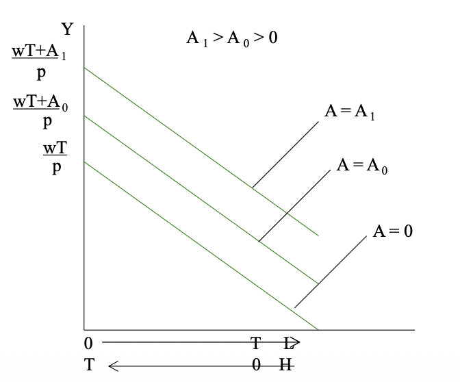
Visualizing the Shift
When nonlabour income increases ($A_1 > A_0 > 0$), the budget constraint moves vertically upward. Crucial observations:
- Intercepts on Y-axis: They jump from $\frac{wT}{p}$ to $\frac{wT + A_0}{p}$ and then $\frac{wT + A_1}{p}$. You can consume more at every level.
- Parallelism: The slope does not change ($slope = -w/p$). This is because the nominal wage and prices are constant. The relative cost of leisure stays the same.
- The Pivot Point ($T$): If you choose zero work ($H=0$), your income is no longer zero; it is exactly your nonlabour income ($Y = A/p$). The line still ends at $T$ hours of leisure, but at a "spike" above the horizontal axis.
🛋️ The Pure Income Effect
What happens to your choice when you get richer without the wage changing? This is a "clean" experiment to observe how income alone dictates behavior, with no relative price changes to cloud the result.
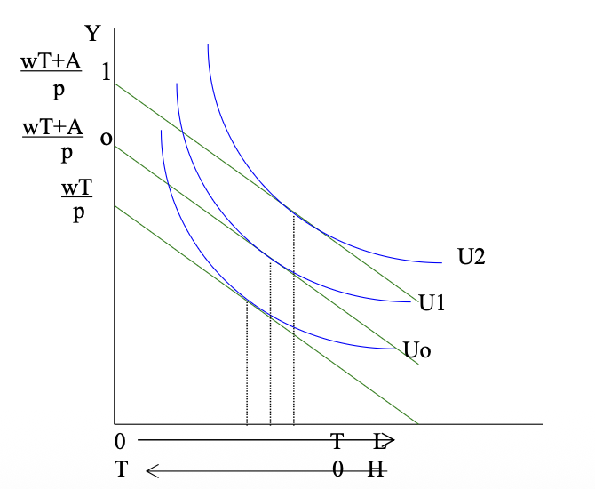
Under the standard assumption that Leisure is a Normal Good, any increase in nonlabour income results in higher consumption of free time:
$\frac{\partial L}{\partial A} > 0$
As we move from $U_0 \to U_1 \to U_2$:
- Leisure hours rise: $L_0 < L_1 < L_2$
- Work hours fall: $H_0 > H_1 > H_2$
📈 Wage Changes: The Battle Between SE and IE
When your wage ($w$) increases, two things happen at the same time: leisure becomes more expensive (Substitution Effect), and you become richer (Income Effect). To understand the final result, we must perform a "Hicks-Slutsky" style decomposition.
1. Graphique 1 — Changement total observé ($N_1 \to N_2$)

Here, the wage increases from $w_0 \to w_1$. The budget line becomes steeper. We observe the individual moving from point $N_1$ to $N_2$.
- Initial state ($N_1$): Leisure is approx. 8 hours.
- Final state ($N_2$): Leisure falls to approx. 5 hours.
- Result: Leisure decreases ($L \downarrow$), and work increases ($H \uparrow$).
Conclusion: In this specific case, the Substitution Effect dominates the Income Effect.
2. Graphique 1.5 — The Substitution Effect ($N_1 \to N_3$)

To isolate this effect, we use a Compensated Budget Line (dotted). This line is parallel to the new wage but "pulls back" income so the individual stays on their original utility curve ($U_1$).
- Logic: Price changes, but happiness stays constant.
- Direction: Since leisure is now more "expensive" (higher opportunity cost), the individual always substitutes leisure for work.
- Pure substitution: $N_1 \to N_3$ shows leisure falling significantly.
3. Graphique 1.6 — The Income Effect ($N_3 \to N_1$)

Now we move from the compensated line back to the actual new budget line ($N_3 \to N_2$).
- Logic: Prices are constant, but real income (purchasing power) rises from $U_1$ to $U_2$.
- Direction: If leisure is a normal good, the individual wants more leisure now that they are richer ($L \uparrow$).
- Conflict: This effect fights against the Substitution Effect. Here, it is smaller, so the net result is still more work.
- Substitution Effect (SE): Work more, Leisure less (Leisure is expensive).
- Income Effect (IE): Work less, Leisure more (You are richer).
- Net Result: Depends on which effect is physically stronger for that specific individual.
🏁 The Net Effect: Who Wins the Battle?
In the real world, we never see the individual effects in isolation. A wage increase ($w_0 \to w_1$) triggers a conflict between the incentive to work more and the desire to relax now that you are richer. The final result depends on which effect is physically stronger.
Graph 1 — Case where the substitution effect dominates
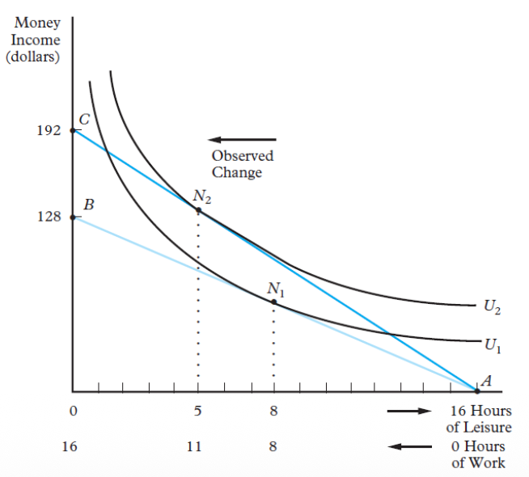
Visual Description: The transition from $N_1 \to N_2$ is observed. The movement to the left is significant (less leisure).
- Change: Leisure $8 \to 5$ | Work $8 \to 11$.
- Utility: Moving to a higher utility curve ($U_1 \to U_2$).
Interpretation: Leisure is more expensive, so the individual substitutes leisure for work. Here, $SE > IE$, so work increases ($H \uparrow$).
Graph 2 — Case where the income effect dominates
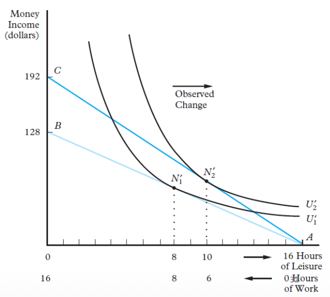
Visual Description: Here the observed movement is $N_1' \to N_2'$. A movement to the right is observed (more leisure).
- Change: Leisure $8 \to 10$ | Work $8 \to 6$.
Interpretation: The wage increase raises real income. As leisure is a normal good, the individual consumes more of it. Here, $IE > SE$, so work decreases ($H \downarrow$).
🛡️ Income Replacement Programs
How do social policies affect our decision to work? We now examine programs designed to replace lost income, such as unemployment benefits or disability insurance, and how they alter the budget constraint and individual utility.
1. Initial Labour-Leisure Equilibrium
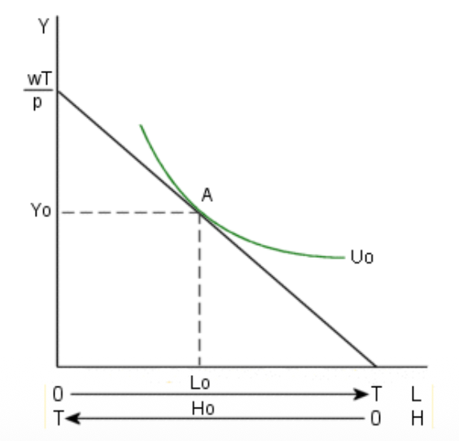
Visual Description: The individual maximizes utility at point A $(L_0, Y_0)$.
- Budget (black): Slope $= -w/p$. Vertical intercept $= wT/p$.
- Optimality: Tangency between $U_0$ (green) and the constraint at point A.
- Result: $L_0$ hours of leisure and $H_0 = T - L_0$ hours of work.
Equilibrium Condition: $MRS_{L,Y} = w/p$. The subjective value of leisure equals the real market wage.
2. Unemployment Compensation & Incentive Problems
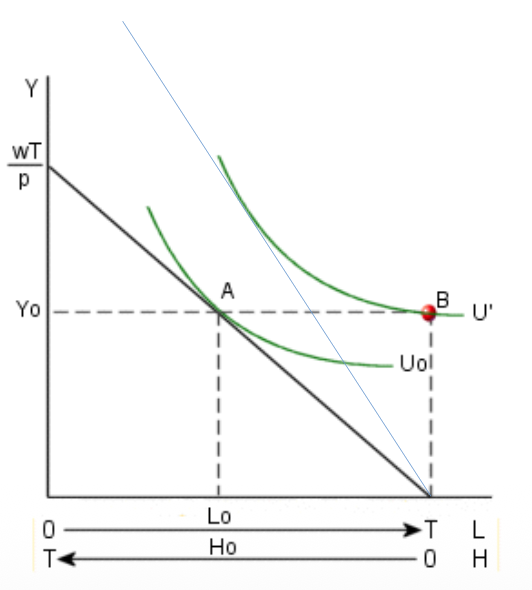
What happens if the state replaces income in case of unemployment?
- The "Spike" (Point B): If 100% of income is replaced, the individual can reach point B ($L=T$) with the same income as they had when working.
- Utility Gain: At point B, the individual is on a much higher indifference curve than at point A.
- Disincentive: This creates a "negative marginal tax" that discourages returning to work by raising the reservation wage.
3. Disability Insurance
The Logic of Maintenance
If a disabled worker receives the same level of income after an injury as before ($Y_{stable}$), but benefits from more leisure time ($L \uparrow$), their utility level necessarily increases.
Hypothesis: It is assumed that medical expenses and "pain and suffering" are fully compensated by insurance.
⚖️ Welfare and Workfare Systems
How do guaranteed income programs affect the incentive to work? We explore the traditional welfare system, the "welfare trap," and the policy shift towards workfare requirements.
1. The Basic Welfare System – Budget Constraint

Visual Description: The budget constraint is modified by a guaranteed income floor $Y_t$.
- Horizontal Segment: $Y = Y_t$. In this zone, the government tops up any labor income until it reaches the target $Y_t$.
- Decreasing Segment: Slope $= -w/p$. This part begins once labor income exceeds the welfare threshold.
2. Welfare’s Impact on Labour Supply
Labour Supply Reduction
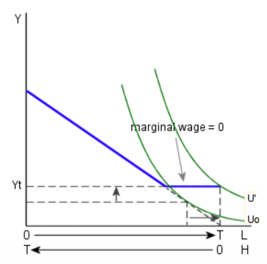
For an individual already earning less than $Y_t$, the introduction of welfare shifts them to a higher utility curve $U'$. Since the Price of Leisure is now 0 (Substitution Effect) and Real Income is higher (Income Effect), the result is a significant decrease in hours worked ($H \downarrow$).
Labour Force Exit
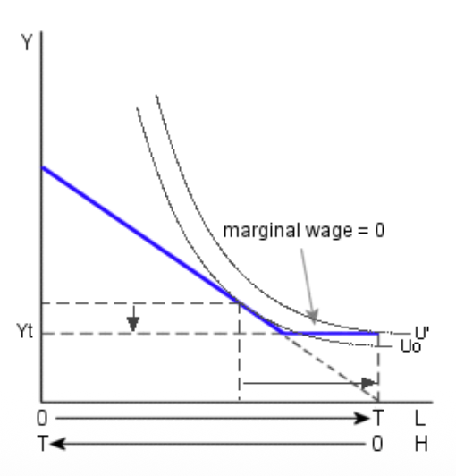
Some individuals who earned more than $Y_t$ without welfare might choose to stop working entirely ($L=T$) once the program is available. They sacrifice a small amount of income to gain a massive amount of leisure, achieving a higher level of utility ($U' > U_0$).
3. The Workfare System
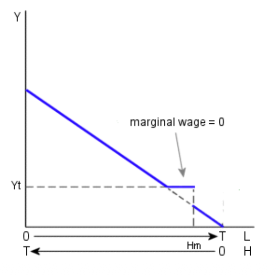
To combat the welfare trap, Workfare requires recipients to work a minimum number of hours ($H_m$) to qualify for benefits.
- If $H < H_m$: Benefits are zero. The individual stays on the original budget line.
- If $H \ge H_m$: The individual jumps to the guaranteed income $Y_t$. This creates a vertical jump in the constraint.
Expected Result: Most recipients will choose to work exactly $H_m$ hours. Working more than $H_m$ yields zero marginal wage until benefits are completely phased out.
🎟️ Earned-Income Tax Credit (EITC)
The EITC is a modern alternative to traditional welfare. It provides additional income to low-income households with a key advantage: it creates smaller labour supply disincentives compared to a guaranteed income system.

System Dynamics
- Phase-In: The tax credit rises with income initially, increasing the marginal wage and encouraging work.
- Plateau: The credit remains constant for a range of income.
- Phase-Out: The credit gradually declines as income continues to rise.
Labour Market impact:
- Increases participation (it encourages people to enter the workforce).
- Empirically, its "negative" effect on hours worked (due to the phase-out) is found to be limited.
🏠 Household Production Model
The standard model defines leisure as "everything that isn't work." The Household Production Model goes further by recognizing that time spent at home is often work (cooking, cleaning, childcare) that produces utility directly, rather than just "passive" leisure.
1. Household Production vs. Paid Work

Visual Analysis:
- Vertical Axis: Income ($).
- Horizontal Axis: Household Time (Home work). (Point A = 16h home, 0h paid)
- Constraint (Blue): Shows the trade-off. Choosing 1h of home work means sacrificing 1h of market wage.
- Indifference Curves (Y, Z): Represent the household's utility. $Z > Y$.
2. Joint Decisions & Specialization
Comparative Advantage
To produce home output efficiently, families often specialize. Each member should focus on tasks where they have a comparative advantage (lower opportunity cost).
A member has a comparative advantage if they are exceptionally productive at home (absolute advantage) or if their market wage is relatively low.
Gender Division of Labour
Historically, a rigid division existed (men in market, women at home) due to labor market discrimination and high fertility rates. As female wages rise and fertility declines, this division has blurred: women work more for pay, and men spend slightly more time on home tasks.
🔄 Added vs. Discouraged Worker Effects
How does a recession affect total labour supply in a household?
The Discouraged Worker Effect
As unemployment rises, the expected wage ($E(W) = \pi \cdot W$) declines because the probability of finding a job ($\pi$) drops. Some people give up looking entirely, leading to hidden unemployment.
The Added Worker Effect
When the primary earner loses their job, the spouse may enter the market or work more hours to compensate for the loss of household income. This is a pure income effect.
⏳ Lifecycle Labour Supply
Labour supply decisions aren't just made day-to-day; they are planned over a lifetime. We adjust our effort based on how our productivity and market value evolve as we age.
1. The Lifecycle Wage Profile

Visual Analysis: The wage follows an "inverted U" or bell-shaped curve over time.
- Early Life: Wages rise due to human capital accumulation (education, training, and early experience).
- Mid-Life Peak: Experience and skills are at their maximum.
- Late Life: Wages may decline due to skill obsolescence, health issues, or reduced physical productivity.
2. Lifecycle Time Allocation

People allocate time based on the opportunity cost of their time (the market wage):
- High Wage Periods (Mid-Life): The opportunity cost of staying home is high. Market work increases, and household production decreases.
- Low Wage Periods (Youth/Old Age): Market earning capacity is lower. People spend more time in household production and less in the paid labour market.